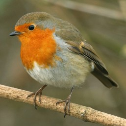

Sunday, April the 6th, 2014
back to: title, date or indexes

The robin is a type of bird. It may be found, in near stasis, perched on a bough. Arrival upon and departure from the bough is accomplished by flight, flight achieved by deployment of the wings (a pair). Not all birds are capable of flight, but the robin is. During perchment, the robin may be captured by placing over it a net attached to one end of a stick. While it is thus prevented from flying away, one can insert a syringe through the net, and stun the robin with a sedative, rendering it unconscious. The net can then be lifted up, and the bird placed in the pocket.
One should ensure that the bough from which the robin is abducted is within a short walking distance of the laboratory or other workspace. If the bird regains consciousness while in the pocket, it will panic, and flap about, and may well exercise its wings sufficiently to fly free, up and away into the boundless sky. Upon arrival at the lab, place the stunned bird on a work-surface and inject it with another dose of the serum, calibrated to keep it away with the fairies for a few hours.
Various activities can now be carried out with the unconscious robin. These may be in the spirit of scientific enquiry, or just larking about. (Technically, the lark is a different type of bird and has nothing to do with larking about, at least not in the present context.) If one intends, shortly before the robin wakes up, its tiny brain woozy, to replace it on its bough, or on a different but nearby bough, it is important that no great harm should come to the bird as a result of the activities, whatever they might be. Small modifications to the unconscious robin are permissible, for example plucking out a handful of its feathers for later examination under a microscope at one's leisure, or painting it an entirely different colour with a non-toxic pigment. But on no account should one remove, say, its head, for in doing so one will kill the robin and it will not wake from its induced coma.
If carrying out scientific experiments, it is well to bear in mind that the robin is but one type of bird, and one cannot extrapolate from the results of one's experiments deductions applicable to all types of birds, not even to all robins. It may not be a normal robin. If simply larking about, say by dipping the feet in a pool of ink and then printing a false bird-trail across the bedroom ceiling of a wife one is plotting to drive insane, as in the Patrick Hamilton play Gaslight, one need not bother whether the robin is normal or not. (The villainous husband in Gaslight did not print such a bird-trail, but it is the sort of tactic he might have used, had he had access to an unconscious robin.)
When replacing the bird on its bough, it will need to be propped upright until it is fully awake, otherwise it will topple to the ground due to gravitational force. Use a small structure of interlaced twigs, or some such temporary bolster. Upon waking, the robin will probably bestir itself and use its wings to depart the bough, in flight, up into the sky, until it is quite out of sight, its destination unknown, even to the robin itself.
This is an extract from Mr Key's Book Of Birds, a work in progress.
Hooting Yard on the Air, April the 10th, 2014 : “The Robin” (starts around 00:27)
Hooting Yard on the Air, June the 28th, 2018 : “The Robin” (starts around 00:51)